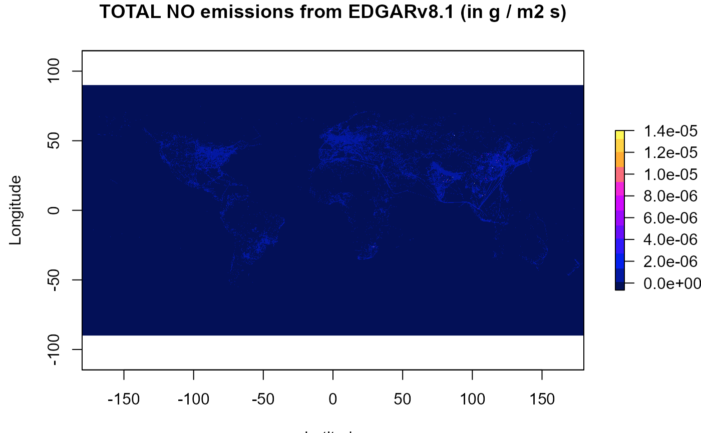
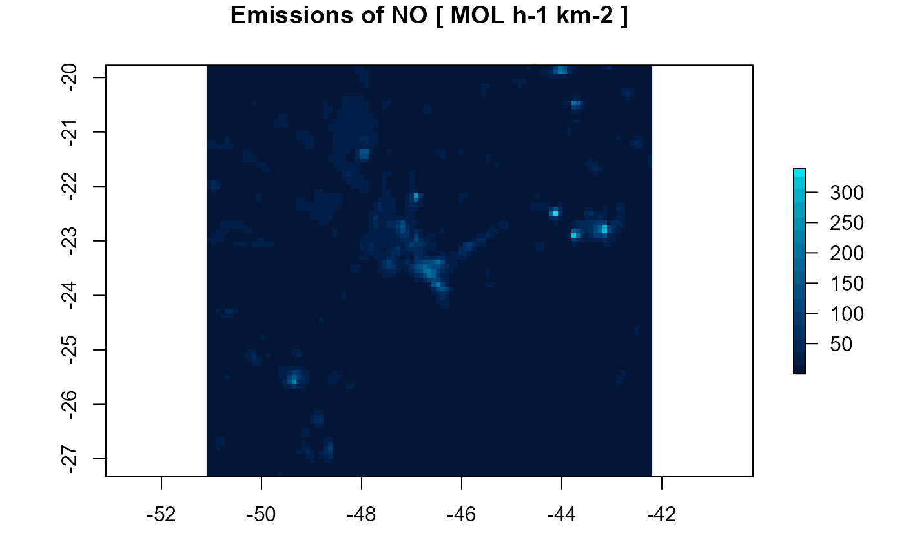

Read data from global inventories. Several files can be read to produce one emission output and/or can be splitted into several species
read(
file = file.choose(),
version = NA,
coef = rep(1, length(file)),
spec = NULL,
year = 1,
month = 1,
hour = 1,
categories,
reproject = TRUE,
as_raster = TRUE,
skip_missing = FALSE,
verbose = TRUE
)Read abbout EDGAR at http://edgar.jrc.ec.europa.eu and MACCITY at http://accent.aero.jussieu.fr/MACC_metadata.php
file name or names (variables are summed)
Character; One of of the following:
| argument | tested | region | resolution | projection |
| EDGAR | 4.32 and 5.0 | Global | 0.1 x 0.1 ° | longlat |
| EDGAR_HTAPv2 | 2.2 | Global | 0.1 x 0.1 ° | longlat |
| GAINS | v5a | Global | 0.5 x 0.5 ° | longlat |
| RCP | RCP3PD Glb | Global | 0.5 x 0.5 ° | longlat |
| MACCITY | 2010 | Global | 0.5 x 0.5 ° | longlat |
| FFDAS | 2.2 | Global | 0.1 x 0.1 ° | longlat |
| ODIAC | 2020 | Global | 1 x 1 ° | longlat |
| VULCAN-y | 3.0 | US | 1 x 1 Km | lcc |
| VULCAN-h | 3.0 | US | 1 x 1 Km | lcc |
| ACES | 2020 | NE US | 1 x 1 km | lcc |
coefficients to merge different sources (file) into one emission
numeric speciation vector to split emission into different species
scenario index (only for GAINS and VULCAN-y)
the desired month of the inventory (MACCITY and ODIAC)
hour of the emission (only for ACES and VULCAN-h)
considered categories (for MACCITY/GAINS variable names), empty for use all
to project the output to "+proj=longlat" needed for emission function (only for VULCAN and ACES)
return a raster (default) or matrix (with units)
return a zero emission and a warning for missing files/variables
display additional information
Matrix or raster
for EDGAR (all versions), GAINS, RCP and MACCTITY, please use flux (kg m-2 s-1) NetCDF file.
Janssens-Maenhout, G., Dentener, F., Van Aardenne, J., Monni, S., Pagliari, V., Orlandini, L., ... & Wankmüller, R. (2012). EDGAR-HTAP: a harmonized gridded air pollution emission dataset based on national inventories. European Commission Joint Research Centre Institute for Environment and Sustainability. JRC 68434 UR 25229 EUR 25229, ISBN 978-92-79-23123-0.
Lamarque, J.-F., Bond, T. C., Eyring, V., Granier, C., Heil, A., Klimont, Z., Lee, D., Liousse, C., Mieville, A., Owen, B., Schultz, M. G., Shindell, D., Smith, S. J., Stehfest, E., Van Aardenne, J., Cooper, O. R., Kainuma, M., Mahowald, N., McConnell, J. R., Naik, V., Riahi, K., and van Vuuren, D. P.: Historical (1850-2000) gridded anthropogenic and biomass burning emissions of reactive gases and aerosols: methodology and application, Atmos. Chem. Phys., 10, 7017-7039, doi:10.5194/acp-10-7017-2010, 2010.
Z Klimont, S. J. Smith and J Cofala The last decade of global anthropogenic sulfur dioxide: 2000–2011 emissions Environmental Research Letters 8, 014003, 2013
Gurney, Kevin R., Jianming Liang, Risa Patarasuk, Yang Song, Jianhua Huang, and Geoffrey Roest (2019) The Vulcan Version 3.0 High-Resolution Fossil Fuel CO2 Emissions for the United States. Nature Scientific Data.
# \donttest{
dir.create(file.path(tempdir(), "EDGARv432"))
folder <- setwd(file.path(tempdir(), "EDGARv432"))
url <- "http://jeodpp.jrc.ec.europa.eu/ftp/jrc-opendata/EDGAR/datasets/v432_AP/NOx"
file <- 'v432_NOx_2012.0.1x0.1.zip'
download.file(paste0(url,'/TOTALS/',file), file)
unzip('v432_NOx_2012.0.1x0.1.zip')
nox <- read(file = dir(pattern = '.nc'),
version = 'EDGAR',
spec = c(E_NO = 0.9 , # 90% of NOx is NO
E_NO2 = 0.1 )) # 10% of NOx is NO2
#> reading EDGAR emissions, output unit is g m-2 s-1 ...
#> from v432_NOx_2012.0.1x0.1.nc emi_nox x 1.000000
#> using the following speciation:
#> E_NO = 0.9
#> E_NO2 = 0.1
setwd(folder)
# creating a color scale
cor <- colorRampPalette(colors = c(c("#031057", "#0522FC",
"#7E0AFA", "#EF0AFF",
"#FFA530", "#FFF957")))
raster::plot(nox$E_NO,xlab="Lat", ylab="Lon",
col = cor(12),zlim = c(-6.5e-7,1.4e-5),
main="NO emissions from EDGAR (in g / m2 s)")

d1 <- gridInfo(paste(system.file("extdata", package = "EmissV"),"/wrfinput_d01",sep=""))
#> Grid information from: C:/Users/schuch/AppData/Local/Temp/RtmpSiv07Z/temp_libpath12013ec53e5/EmissV/extdata/wrfinput_d01
NO <- emission(grid = d1, inventory = nox$E_NO, pol = "NO", mm = 30.01, plot = TRUE)
#> Using raster from inventory for NO ...
#> Grid output: 99 columns 93 rows

# }